Global Tech Think Tank Watch
国际科技智库周报
本周态势
本周形成 17 条 P0/P1 重点，议题集中在涉华科技竞争与上海参考、产业链、制造与能源基础设施。产业链、制造与能源信号 9 条；AI 与数字基础设施信号 8 条；直接涉华条目 7 条。
本周必读
- 人工智能时代的战略自主研判 RAND对“通过降低依赖获得自主”的政策想象持明显怀疑立场，核心判断是变革性人工智能会增加跨国技术、算力、数据和产业联系的复杂性，从而挫败完全自主的目标。证据 RAND考察人工智能快速发展如何改变各国追求战略自主的条件，背景是冷战后以开放和经济融合约束战略竞争的预期已经瓦解。
- 就中国生物技术企业国家支持与定价行为向美国国际贸易委员会提交的意见研判 ITIF采取强烈批判和竞争性立场，主张中国在迅速接近美国生物医药领先地位的过程中，除研发投入、税收激励和人才计划等合法工具外，还使用了其认定违反国际贸易规则的补贴、知识产权侵害、掠夺性定价和基因数据强制收集。证据 Information Technology and Innovation Foundation意见书回应美国国际贸易委员会对中国生物技术企业国家支持和定价行为的调查，研究对象是中美生物医药创新与制造竞争。
- 让人工智能服务网络防御：强化美国网络安全的战略研判 Center for Strategic and International Studies持高度警示且带有行动乐观主义的立场：先进模型会迅速扩大攻击者能力，但只要政府、企业和非营利部门协调部署，人工智能也能使防御方以机器速度发现、排序和修复漏洞。证据 Center for Strategic and International Studies评估前沿人工智能模型对美国网络攻防格局的影响，重点考察漏洞发现、攻击规模化和机器速度防御带来的时间压力。
- 人工智能与非洲矿业的未来研判 大西洋理事会对“智能采矿”持明确但有条件的乐观立场，认为数字化能够帮助非洲国家摆脱传统约束和单向度矿业合作，同时服务美国及盟友的供应链安全。证据 Atlantic Council GeoTech Center and Cyber Statecraft Initiative讨论人工智能和大数据如何改变非洲关键矿产勘探、开发及供应链治理，背景是非洲拥有约三成全球关键矿产储量，却仍受殖民时期地质测绘、基础设施不足和低附加值出口结构制约。
- 欧洲清洁技术追踪器研判 Bruegel在该页面采取数据基础设施式的中性立场，意在为欧盟清洁技术进展提供可持续引用和更新的观察工具，未提出单一政策结论。证据 Bruegel持续更新的“欧洲清洁技术追踪器”数据集入口，研究对象涵盖欧洲绿色协议、能源脱碳、投资和产业政策。
议题观点速览
涉华科技竞争与上海参考（2 条）
- RAND：RAND对“通过降低依赖获得自主”的政策想象持明显怀疑立场，核心判断是变革性人工智能会增加跨国技术、算力、数据和产业联系的复杂性，从而挫败完全自主的目标。
- RAND：RAND采取探索性且带有警示意味的立场，把“智能体战略”视为可能改变国家竞争主体、节奏和互动逻辑的问题，而非把AI仅当作辅助分析工具。
产业链、制造与能源基础设施（2 条）
- RAND：兰德欧洲持审慎乐观立场，认为跨地域数据中心协同可显著缓解单点供电和成员国利益分配问题，并把分散集群汇聚为可承担前沿训练的资源，但无法创造新的芯片或消除欧美算力差距。
- Bruegel：Bruegel在该页面采取数据基础设施式的中性立场，意在为欧盟清洁技术进展提供可持续引用和更新的观察工具，未提出单一政策结论。
AI、数字基础设施与技术治理（2 条）
- Center for Strategic and International Studies：Center for Strategic and International Studies持高度警示且带有行动乐观主义的立场：先进模型会迅速扩大攻击者能力，但只要政府、企业和非营利部门协调部...
- Atlantic Council GeoTech Center and Cyber Statecraft Initiative：大西洋理事会对“智能采矿”持明确但有条件的乐观立场，认为数字化能够帮助非洲国家摆脱传统约束和单向度矿业合作，同时服务美国及盟友的供应链安全。
科研体系、人才与创新政策（2 条）
- RAND：兰德对部分减负措施持支持态度，但总体采取明确警示立场，认为若未修改，若干条款将增加行政浪费、降低透明度、破坏科研资助可预期性并形成无法回收的合规成本。
- Information Technology and Innovation Foundation：ITIF持明确警示立场，认为发射台、载荷集成设施等能力不足和设备老化将使航天港成为美国太空产业增长的主要瓶颈。
本期目录
- P0主题 01｜人工智能时代的战略自主
- P0主题 02｜汇聚欧洲算力：分布式训练对欧洲前沿人工智能的潜力
- P0主题 03｜作为战略家的AI：关于智能体战略本质的四项假设
- P0主题 04｜就中国生物技术企业国家支持与定价行为向美国国际贸易委员会提交的意见
- P0主题 05｜《美墨加协定》为何关系北美经济未来
- P0主题 06｜让人工智能服务网络防御：强化美国网络安全的战略
- P1主题 07｜人工智能与非洲矿业的未来
- P1主题 08｜欧洲清洁技术追踪器
- P1主题 09｜关于美国药品供应链外国所有权与控制问题的参议院老龄问题特别委员会证词
- P1主题 10｜美国人形机器人产业正在落后
- P1主题 11｜欧亚捐助方国际发展合作前景
- P1主题 12｜面向人工智能经济，大学必须重构AI教育
- P1主题 13｜加速电动汽车转型的贸易工具：既有框架的最佳实践
- P1主题 14｜改革联邦科研资助：兰德对美国行政管理和预算局2026年5月联邦财政援助规则修订草案的意见
- P1主题 15｜贸易透明度挑战
- P1主题 16｜美国航天港需要更多资金以避免发射瓶颈
- P1主题 17｜本周事实：2024年美国数字经济产出达到GDP的18%
人工智能时代的战略自主
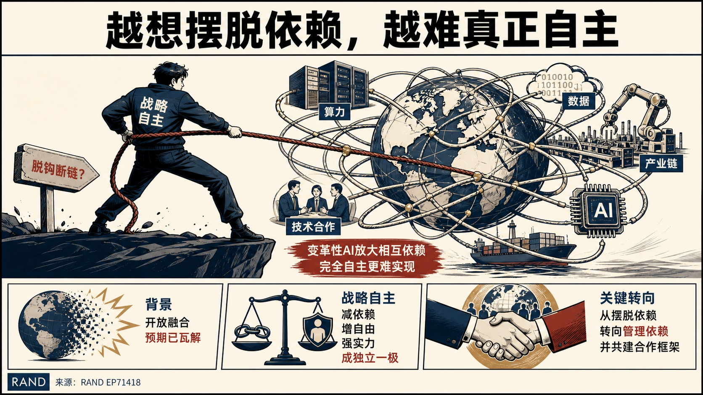
RAND对“通过降低依赖获得自主”的政策想象持明显怀疑立场，核心判断是变革性人工智能会增加跨国技术、算力、数据和产业联系的复杂性，从而挫败完全自主的目标。
人工智能时代的战略自主
论证与政策含义
- RAND考察人工智能快速发展如何改变各国追求战略自主的条件，背景是冷战后以开放和经济融合约束战略竞争的预期已经瓦解。
- 文章把战略自主概括为减少战略依赖、扩大行动自由、强化国内竞争力，并指出部分国家还希望借此成为多极世界中的独立一极。
- 其论证强调深度相互依赖在竞争环境中既被视为脆弱性，也仍是人工智能能力形成和风险治理不可回避的条件。
- 章节因此把关键争论从“是否摆脱依赖”转向“如何管理依赖”：国家需要增强人工智能全栈能力，同时塑造应对文明级风险和机会的合作架构。
政策建议
RAND主张各国在人工智能全栈增强本国能力，但不应把战略自主理解为消除依赖；更可行的方向是管理依赖，并同步建设跨国合作架构以应对人工智能的系统性风险和机会。汇聚欧洲算力：分布式训练对欧洲前沿人工智能的潜力
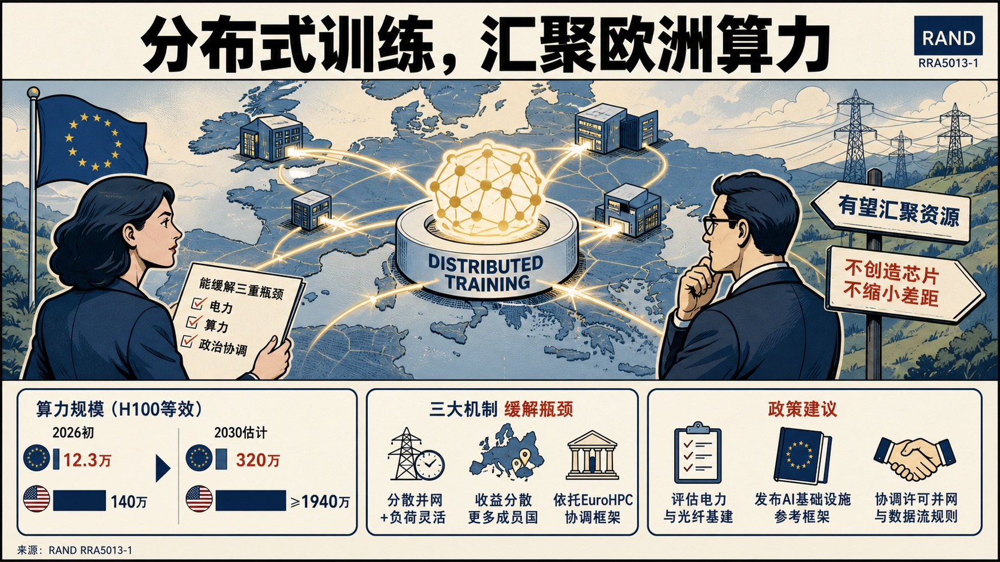
兰德欧洲持审慎乐观立场，认为跨地域数据中心协同可显著缓解单点供电和成员国利益分配问题，并把分散集群汇聚为可承担前沿训练的资源，但无法创造新的芯片或消除欧美算力差距。
汇聚欧洲算力：分布式训练对欧洲前沿人工智能的潜力
论证与政策含义
- RAND评估分布式训练能否缓解欧洲前沿人工智能训练面临的电力、算力和政治协调三重瓶颈。
- 报告基于文献综述、专家咨询以及算力和电力需求量化估算作出判断：2026年初欧洲运行中的算力约为12.3万张H100等效芯片，美国约为140万张；计入已确认和可能项目后，2030年欧洲约320万张，美国至少1940万张。
- 分布式架构允许多个较小站点并行申请并网，也能通过负荷灵活性释放电网容量；政治上则可把基础设施收益分散至更多成员国，并利用EuroHPC既有协调框架。
- 报告同时明确反方边界：该方案不会增加欧洲芯片存量，也不会赋予欧洲相对美国的比较优势。
政策建议
RAND建议欧盟分别评估备用电网容量和跨境光纤基础设施，发布欧洲AI基础设施参考框架，降低数据中心接入骨干网络的摩擦，并持续监测分布式训练技术。监管方面应协调成员国许可和并网程序，建立预先批准的候选站点组合，并通过《云与人工智能发展法案》明确欧盟内部训练数据流适用的数据保护和主权规则。作为战略家的AI：关于智能体战略本质的四项假设
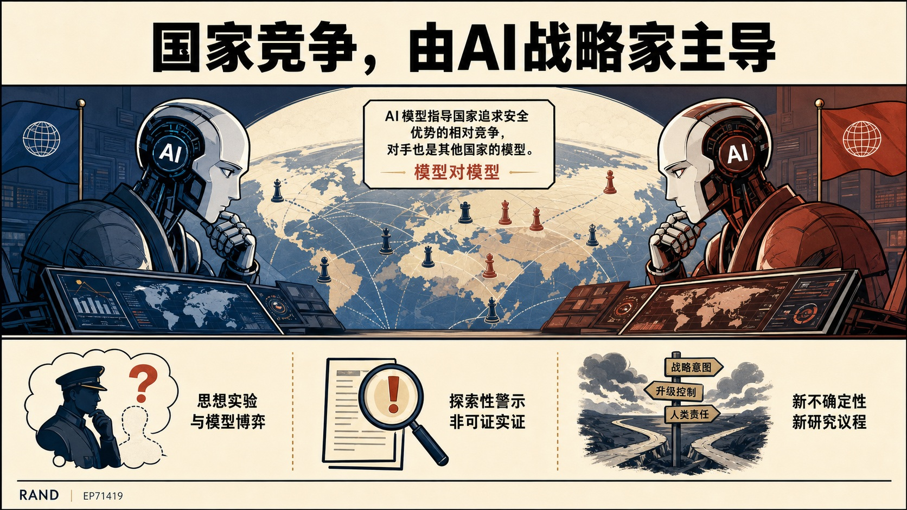
RAND采取探索性且带有警示意味的立场，把“智能体战略”视为可能改变国家竞争主体、节奏和互动逻辑的问题，而非把AI仅当作辅助分析工具。
作为战略家的AI：关于智能体战略本质的四项假设
论证与政策含义
- RAND提出一个激进的未来情景：国家在追求安全和其他国家目标时，由人工智能模型指导相对优势竞争，而这些模型的主要对手也是其他国家的模型。
- 现有抓取材料能够确认的方法是战略思想实验和模型对模型博弈设想，没有提供可核验的实证数据。
- 标题表明正文提出四项假设，但当前可访问摘要未展开各假设的具体内容，因此不能据此补写其因果链或政策含义。
- 该材料的核心价值在于提出研究议程：当国家战略越来越由自治模型生成时，战略意图、升级控制和人类责任将面临新的不确定性；现有摘要没有作者明确提出的政策建议。
就中国生物技术企业国家支持与定价行为向美国国际贸易委员会提交的意见
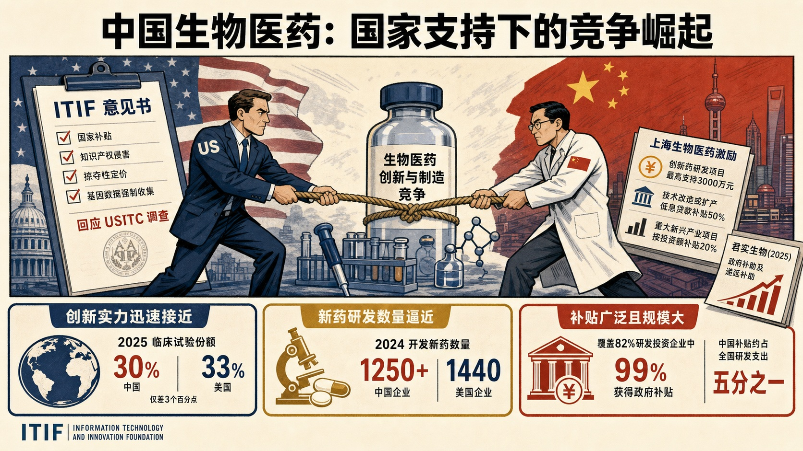
ITIF采取强烈批判和竞争性立场，主张中国在迅速接近美国生物医药领先地位的过程中，除研发投入、税收激励和人才计划等合法工具外，还使用了其认定违反国际贸易规则的补贴、知识产权侵害、掠夺性定价和基因数据强制收集。
就中国生物技术企业国家支持与定价行为向美国国际贸易委员会提交的意见
论证与政策含义
- Information Technology and Innovation Foundation意见书回应美国国际贸易委员会对中国生物技术企业国家支持和定价行为的调查，研究对象是中美生物医药创新与制造竞争。
- 意见书援引数据称，2025年中国占全球最创新药物临床试验的30%，与美国33%的份额只差3个百分点；2024年中国企业开发新药超过1250种，美国为1440种。
- 其补贴论据包括：覆盖中国82%研发投资的企业中有99%获得政府补贴，中国补贴约占全国研发支出的五分之一。
- 文件还以美国司法案件、药企商业秘密案件、原料药价格和基因测序政策等材料构建证据链，但这些事实选择服务于ITIF的美国竞争政策主张，应与中国政策的合法性评价和企业个案责任分别核验。
政策建议
意见书要求美国政策制定者对中国生物技术竞争力上升作出迅速且有力的回应，以维护美国在生物技术产业的领先地位；当前文本未进一步列出成体系的具体政策工具。中国 / 上海参考
意见书具体列举上海生物医药激励：创新药研发项目最高支持3000万元、技术改造或扩产低息贷款补贴50%、重大新兴产业项目按投资额补贴20%；并以君实生物2025年政府补助及递延补助为企业案例。上述数据可用于识别外部机构如何观察上海生物医药政策工具，但其“过度补贴”定性来自ITIF的美国竞争政策立场。《美墨加协定》为何关系北美经济未来
ITIF及加拿大、墨西哥合作机构明确支持续签并现代化协定，将其称为北美经济的“操作系统”，认为稳定规则是企业进行长期供应链、先进制造和物流投资的前提。
《美墨加协定》为何关系北美经济未来
论证与政策含义
- Information Technology and Innovation Foundation评估2026年审议《美墨加协定》对北美生产、投资、人才和数字贸易体系的影响。
- Information Technology and Innovation Foundation指出，协定覆盖超过5亿人口、接近全球三成GDP和约2万亿美元年贸易额，自2020年生效以来区内货物与服务贸易增长37%，2024年达到约1.93万亿美元。
- 其机制判断是，美国的市场、资本和技术，加拿大的能源、关键矿产与工业能力，以及墨西哥的制造、工程和近岸外包能力具有互补性，任何一国单独行动都难以获得相同规模。
- 报告把区域采购、原产地规则、跨境数据流和数字贸易规则视为与中国制造及数据治理模式竞争的制度工具。
政策建议
Information Technology and Innovation Foundation建议三国续签并更新协定，保持能够增强区域竞争力的免税市场准入，解决确有依据的贸易争议，减少规则不确定性，并围绕战略产业深化供应链、创新能力、人才和数字贸易协作。中国 / 上海参考
报告明确把《美墨加协定》定位为北美与中国竞争的平台，主张以区域采购和近岸外包减少中国投入品吸引力，并以开放的数字贸易规则对冲其所称的数据本地化、数字保护主义和网络主权模式；报告未讨论上海。让人工智能服务网络防御：强化美国网络安全的战略
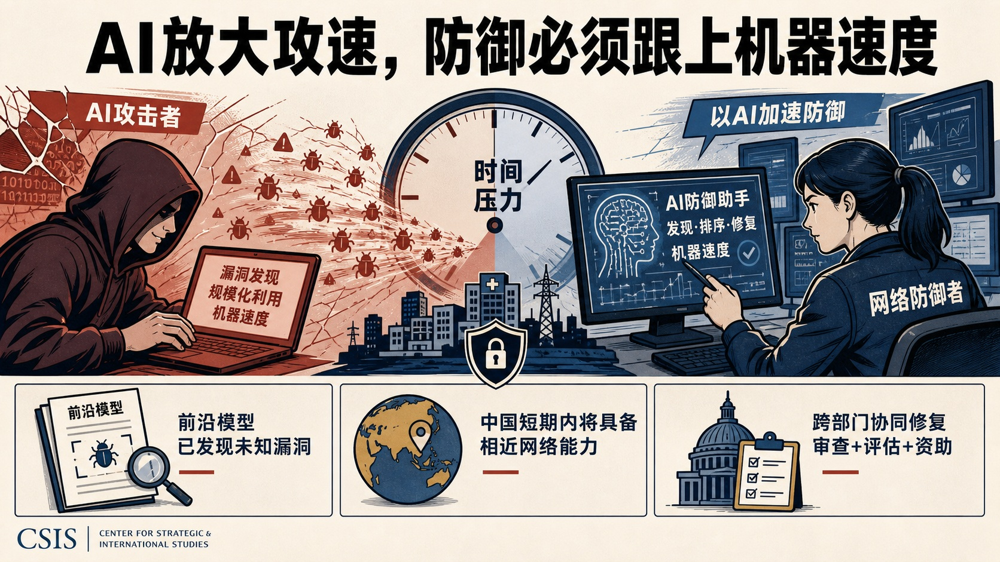
Center for Strategic and International Studies持高度警示且带有行动乐观主义的立场：先进模型会迅速扩大攻击者能力，但只要政府、企业和非营利部门协调部署，人工智能也能使防御方以机器速度发现、排序和修复漏洞。
让人工智能服务网络防御：强化美国网络安全的战略
论证与政策含义
- Center for Strategic and International Studies评估前沿人工智能模型对美国网络攻防格局的影响，重点考察漏洞发现、攻击规模化和机器速度防御带来的时间压力。
- 报告以近期前沿模型发现此前未知软件漏洞的能力为关键证据，并判断中国可能已经具备或将在不到一年内获得相近能力。
- 其主要风险判断是，若防御体系继续依赖人工速度和传统工作流，攻击者发现并利用漏洞的速度将超过合法用户开发和部署补丁的速度。
- 报告同时强调人工智能不会自动改善防御，模型误用、失调行为、评估不足以及技术能力集中于少数企业都可能削弱防御收益。
政策建议
Center for Strategic and International Studies建议行政部门与私营部门立即识别、排序和修补关键漏洞，充当跨部门指南与信息共享的协调中心；国会应推动政府和民用网络的全面诊断，并资助开源软件、中小企业和关键基础设施等脆弱环节。作者还主张建立前沿模型发布前约30天的重点能力审查，并通过学术界、非政府组织及新的专业机构扩大发布后评估。中国 / 上海参考
报告把中国接近美国前沿模型网络能力的时间判断作为紧迫性依据，并主张美国把有限领先窗口优先用于修复漏洞；其涉华内容服务于美国网络安全竞争判断，未提出面向中国或上海的具体政策安排。人工智能与非洲矿业的未来
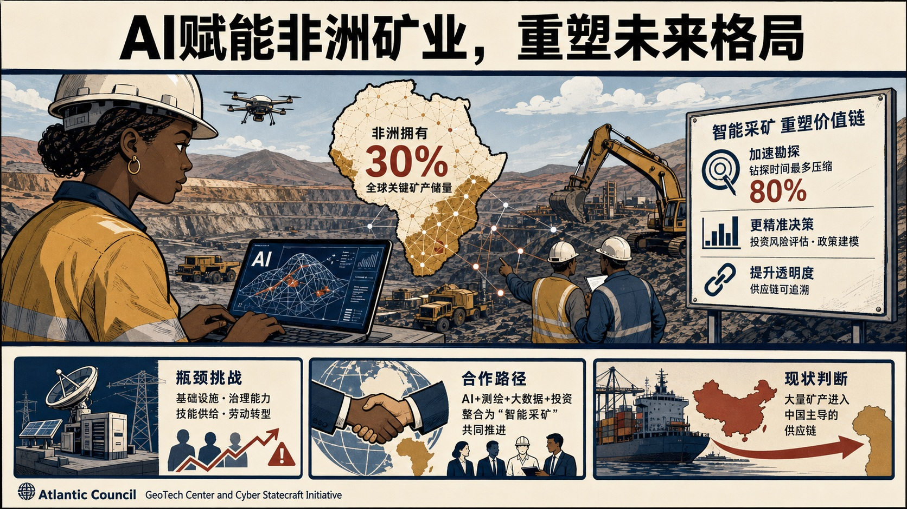
大西洋理事会对“智能采矿”持明确但有条件的乐观立场，认为数字化能够帮助非洲国家摆脱传统约束和单向度矿业合作，同时服务美国及盟友的供应链安全。
人工智能与非洲矿业的未来
论证与政策含义
- Atlantic Council GeoTech Center and Cyber Statecraft Initiative讨论人工智能和大数据如何改变非洲关键矿产勘探、开发及供应链治理，背景是非洲拥有约三成全球关键矿产储量，却仍受殖民时期地质测绘、基础设施不足和低附加值出口结构制约。
- Atlantic Council GeoTech Center and Cyber Statecraft Initiative援引全球项目预测，认为相关工具可加快矿藏发现、把钻探时间最多压缩约80%，并改善投资风险评估、政策建模和供应链透明度。
- Atlantic Council GeoTech Center and Cyber Statecraft Initiative同时警示，非洲各国人工智能应用能力并不均衡，电力与数字基础设施、治理能力、劳动转型和技能供给可能成为主要瓶颈。
- 其核心争论在于，技术效率能否真正转化为当地加工能力、人才积累和社区收益，而不只是形成更高效的资源输出通道。
政策建议
Atlantic Council GeoTech Center and Cyber Statecraft Initiative建议美国把人工智能、测绘、大数据与矿业投资整合为统一的“智能采矿”合作议程，并与非洲国家共同推进。具体措施包括为勘探和基础设施引入定向资本，配置矿业、数据和政策等跨学科团队，并在项目设计和执行中实质性纳入非洲本地专业力量。中国 / 上海参考
报告将非洲矿产大量进入中国主导的供应链列为现状判断，并把供应链多元化作为美非合作的重要动因；这一表述反映其明确的地缘竞争立场，但报告未提供面向中国或上海的政策建议。欧洲清洁技术追踪器
Bruegel在该页面采取数据基础设施式的中性立场，意在为欧盟清洁技术进展提供可持续引用和更新的观察工具，未提出单一政策结论。
欧洲清洁技术追踪器
论证与政策含义
- Bruegel持续更新的“欧洲清洁技术追踪器”数据集入口，研究对象涵盖欧洲绿色协议、能源脱碳、投资和产业政策。
- 页面将其标记为活跃数据集，并给出固定 DOI 与版本信息，表明成果形态重在动态监测而非一次性报告。
- Bruegel当前公开页仅提供了数据集迁移提示、作者信息、主题标签和相关追踪器入口，没有呈现指标口径、时间序列或本期数据结果。
- 因此，该页面可作为后续数据调用入口，但现有材料不足以支持对欧洲清洁技术表现作方向性判断，也没有可核实的政策建议。
关于美国药品供应链外国所有权与控制问题的参议院老龄问题特别委员会证词
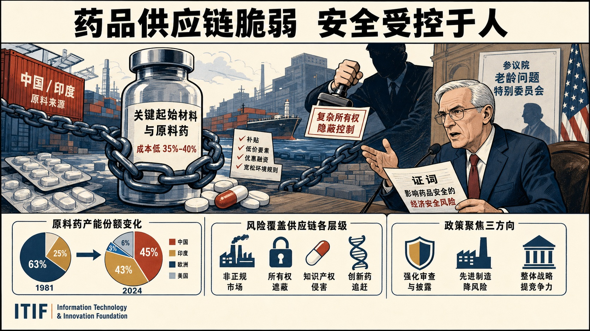
ITIF采取强烈警示和经济安全立场，认为美国对中国和印度关键起始材料与原料药的依赖已经形成结构性脆弱性，同时中国企业通过复杂所有权、品牌和出口安排降低了外部识别能力。
关于美国药品供应链外国所有权与控制问题的参议院老龄问题特别委员会证词
论证与政策含义
- Information Technology and Innovation Foundation证词向美国参议院老龄问题特别委员会说明药品供应链外迁、外国所有权以及中国生物医药竞争力上升对美国药品安全的影响。
- 证词引用FDA原料药主文件数据称，1981年欧洲和美国份额分别为63%和25%，到2024年降至6%和3%，中国与印度则分别达到45%和43%。
- Information Technology and Innovation Foundation还指出，中国原料药制造成本比美国低35%至40%，并将直接补贴、低价土地能源、优惠融资和较宽松环境规则列为成本差异来源。
- 报告进一步讨论企业“假旗”与所有权遮蔽、非正规市场、知识产权侵害及中国在创新药临床试验和新药开发上的追赶，以此论证风险已覆盖供应链各层级。
政策建议
证词提出三类政策：强化CFIUS审查、受益所有权披露和跨部门尽调数据库以识别中国控制；通过先进制造创新、采购和投资降低关键原料药供应链脆弱性；以跨部门整体战略提升美国生物医药竞争力。具体还包括扩大关键产业审查范围、限制具有中国政府融资或军民两用关联的企业获得美国公共资金，并用制造技术降低回流生产的成本差距。中国 / 上海参考
证词把中国在关键起始材料、原料药、仿制药和创新药等环节的能力提升视为美国供应链安全挑战，并提供原料药产能份额、成本差异和所有权识别等观察指标；材料未涉及上海具体政策。美国人形机器人产业正在落后
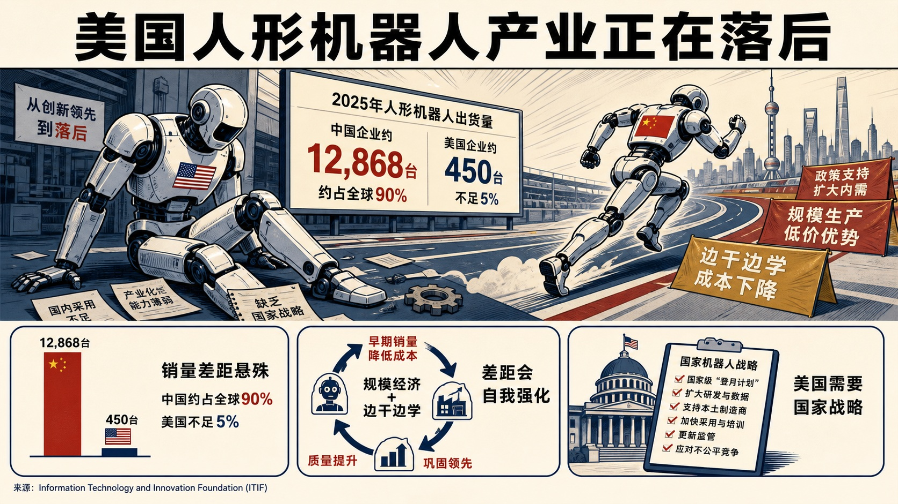
ITIF采取强烈警示立场，认为美国虽曾引领机器人创新，却因缺乏国家战略、国内采用不足和产业化能力薄弱，正在把领导权让给中国。
美国人形机器人产业正在落后
论证与政策含义
- Information Technology and Innovation Foundation比较中美人形机器人产业的生产、销售和应用规模，关注规模化能力如何转化为制造业与国防竞争优势。
- 文章引用2025年销量数据称，中国企业约占全球人形机器人出货量90%，主要企业合计销售约12868台，而美国主要企业合计约450台；美国企业份额不足5%。
- Information Technology and Innovation Foundation把差距归因于中国补贴自动化、扩大国内需求并形成低价规模优势，而美国机器人出口在2022年仅占全球5.4%。
- 其核心机制判断是，机器人产业具有显著规模经济和边干边学效应，早期销量会降低成本、改善质量并进一步巩固领导地位，因此落后可能自我强化。
政策建议
Information Technology and Innovation Foundation建议美国制定覆盖整个机器人生态的国家战略，优先考虑国家级机器人“登月计划”，同时改进产业数据、扩大研发支持、扶持本土制造商、加快企业与联邦机构采用、更新监管、投资劳动力培训，并应对受外国补贴支持的不公平竞争。中国 / 上海参考
文章提供了中国人形机器人企业销量与政策驱动市场扩张的对比证据，并将低价、规模化应用和学习效应视为中国优势来源；报告未涉及上海具体企业或政策。欧亚捐助方国际发展合作前景
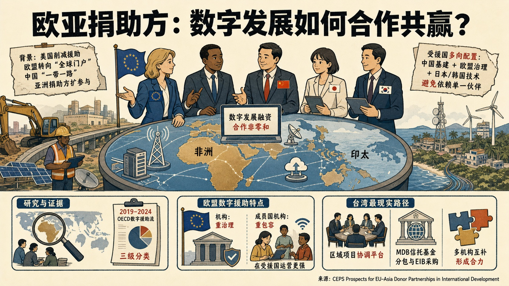
CEPS对合作前景持谨慎务实立场，认为数字技术具有基础设施、治理和地缘竞争多重属性，单一捐助方难以覆盖其多层技术栈，但现有协调机制远未成熟。
欧亚捐助方国际发展合作前景
论证与政策含义
- Centre for European Policy Studies研究欧洲与亚洲捐助方在非洲和印太数字发展融资中的合作空间，背景是美国大幅削减官方发展援助、欧盟转向“全球门户”、中国“一带一路”及日韩等亚洲捐助方扩大参与。
- 研究采用印太和撒哈拉以南非洲访谈、实地调查，并对2019—2024年OECD债权人报告系统数字援助流建立三级分类。
- 结果显示，欧盟在非洲足迹占优，在太平洋较弱、在东南亚居次；欧盟机构的数字援助更集中于治理，成员国发展机构则更多投入数字包容且在受援国保持更强运营存在。
- 报告强调受援国并非被动选择阵营，而是在中国基础设施、欧盟治理框架和日韩技术合作之间进行多向配置，以避免对单一伙伴依赖。
政策建议
Centre for European Policy Studies认为台湾国际合作发展基金会最现实的路径是作为区域项目的捐助协调平台，在欧盟及欧洲机构逐步退出的地区承接合作，并主动对接较小成员国发展机构。具体可利用多边开发银行信托基金、分包安排和欧洲投资银行采购渠道，优先形成多机构能力互补的项目，而非追求高识别度的双边品牌合作。中国 / 上海参考
报告把中国“一带一路”描述为强调主权、不干涉和大规模基础设施的南南合作方案，并指出非洲与印太受援国会利用中国、欧盟、美国及亚洲捐助方之间的竞争进行策略性多向合作；材料未涉及上海。面向人工智能经济，大学必须重构AI教育
ITIF支持大学系统性扩展AI教育，并明确反对把AI素养局限于独立的人工智能或计算机科学专业。
面向人工智能经济，大学必须重构AI教育
论证与政策含义
- Information Technology and Innovation Foundation研究大学如何调整课程以适应人工智能重塑就业和工作流程，重点是将AI能力与行业专业知识结合。
- 文章以北达科他大学、得州大学体系、雪城大学、马里兰大学和华盛顿大学为案例，展示跨学科学位、专业辅修、入学训练营、微证书和项目制学习等路径。
- 共同机制是让学生在医疗、商业、工程、农业、公共政策等具体场景中评价和部署AI，从而同时理解技术价值、伦理影响和适用边界。
- 华盛顿大学的跨专业结课项目还要求比较使用AI与传统方法的结果，体现文章并未把AI应用预设为在所有任务上都更优。
政策建议
文章建议大学把AI素养嵌入现有专业，并扩大跨学科项目、研究机会、产业合作和可叠加微证书；政策制定者应通过竞争性资助支持跨学科AI课程和校企合作，同时为在职劳动者提供持续技能更新渠道。加速电动汽车转型的贸易工具：既有框架的最佳实践
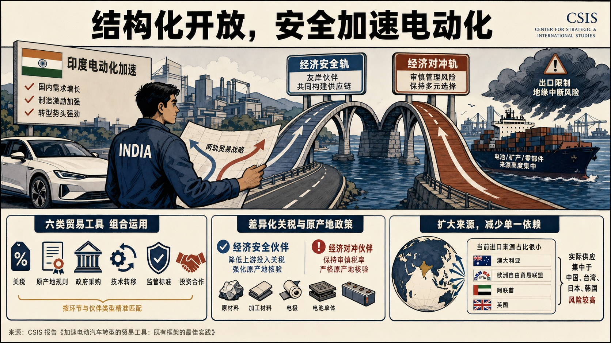
Center for Strategic and International Studies支持印度继续电动化，同时明确主张以“结构化开放”重塑贸易战略：保护整车环节，有选择地开放上游投入，并强化投资、标准和技术合作。
加速电动汽车转型的贸易工具：既有框架的最佳实践
论证与政策含义
- Center for Strategic and International Studies研究印度如何运用贸易政策支撑电动汽车转型，背景是其国内需求与制造激励不断加强，但电池单体、关键矿产和先进零部件仍高度依赖进口。
- 贸易数据表明，澳大利亚、欧洲自由贸易联盟、阿联酋和英国只占印度相关进口的小部分，实际供应仍集中于中国、台湾、日本和韩国，形成出口限制与地缘中断风险。
- 报告据此提出“两轨”框架，把主动构建友岸供应链的伙伴归入经济安全轨，把自身供应链仍高度集中、可能传导风险的伙伴归入经济对冲轨。
- Center for Strategic and International Studies进一步比较关税、原产地规则、政府采购、技术转移、监管标准和投资六类工具，强调自由化与保护的关键在于按价值链环节和伙伴类型排序，而非二选一。
政策建议
Center for Strategic and International Studies建议印度对经济安全伙伴降低原材料、加工材料、电极和电池单体等上游投入关税，对经济对冲伙伴保持更审慎的税率与原产地核验；同时在贸易谈判中组合运用六类工具，扩大矿产和电池供应来源，并把开放条件与可验证的供应链来源相联系。中国 / 上海参考
报告把印度对中国电池、关键矿产和零部件供应的集中依赖列为主要风险来源，并将减少单一地理来源依赖作为贸易协定设计目标；该判断属于印度供应链安全视角，未讨论上海。改革联邦科研资助：兰德对美国行政管理和预算局2026年5月联邦财政援助规则修订草案的意见
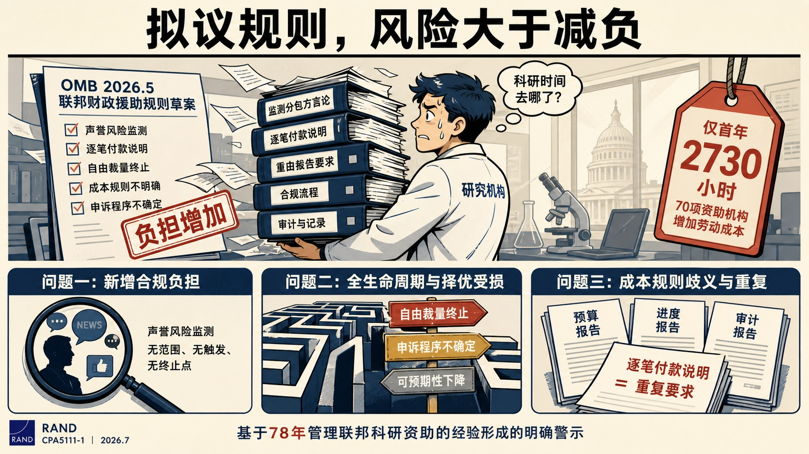
兰德对部分减负措施持支持态度，但总体采取明确警示立场，认为若未修改，若干条款将增加行政浪费、降低透明度、破坏科研资助可预期性并形成无法回收的合规成本。
改革联邦科研资助：兰德对美国行政管理和预算局2026年5月联邦财政援助规则修订草案的意见
论证与政策含义
- RAND意见书评估美国行政管理和预算局2026年5月拟将联邦财政援助指南改为约束性规则并调整资助管理制度的运营后果，重点面向接受联邦科研资助的机构。
- 其分析基于兰德78年管理联邦科研资助的经验，围绕新增合规负担、资助全生命周期与择优机制、允许成本规则歧义三类问题展开。
- 意见书指出，声誉风险监测条款可能迫使机构持续追踪分包方的公开言论、媒体报道和人员社交媒体活动，却没有范围、触发条件或终止点；逐笔付款说明要求也与既有预算、进度报告和审计机制重复。
- 兰德估算，一个管理约70项资助的研究机构仅首年就可能为付款说明增加约2730小时劳动，而规则影响分析却未量化这一成本。
政策建议
兰德建议删除开放式声誉风险监测义务；若保留，应定义重大声誉损害并限于分包任务履约。对于常规付款，应允许已批准预算满足说明要求，仅在明显偏离预算或进度时追加报告；对自由裁量终止、成本规则和申诉程序，也应保留可预期性、费用补偿及透明的择优和复核机制。贸易透明度挑战
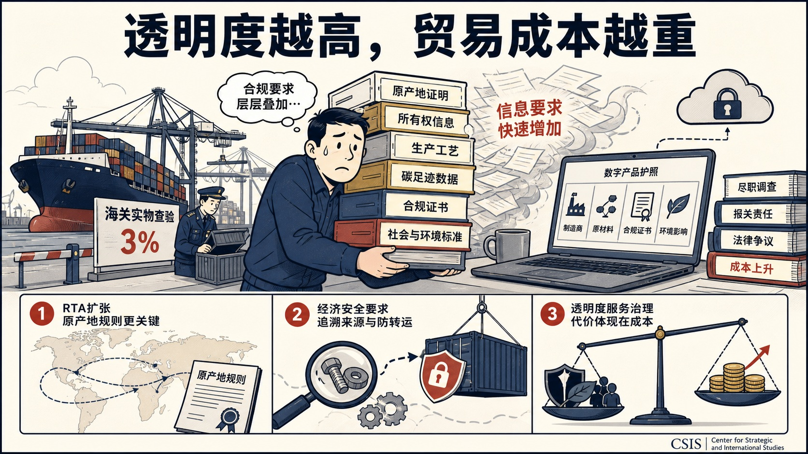
Center for Strategic and International Studies对透明度扩张持审慎警示立场，认为数字化和人工智能虽然提高了处理能力，却无法抵消原产地、所有权、生产方式和碳足迹等信息要求的快速增加。
贸易透明度挑战
论证与政策含义
- Center for Strategic and International Studies考察供应链复杂化、经济安全要求和环境社会治理标准如何共同抬高贸易记录与海关核验负担。
- 其论据包括美国实物查验比例约为3%、区域贸易协定扩张导致原产地规则更关键，以及欧盟数字产品护照对制造商、原材料、合规证书和环境影响进行云端记录。
- Center for Strategic and International Studies指出，美国围绕降低对中国等不可靠来源依赖的经济安全政策，也会推动企业追溯零部件来源并防范转运规避。
- Center for Strategic and International Studies同时承认透明度能够服务安全、环境和强迫劳动治理，但判断其代价将表现为制造商和进口商尽调成本、报关与货运代理责任、法律争议及消费价格上升。
美国航天港需要更多资金以避免发射瓶颈
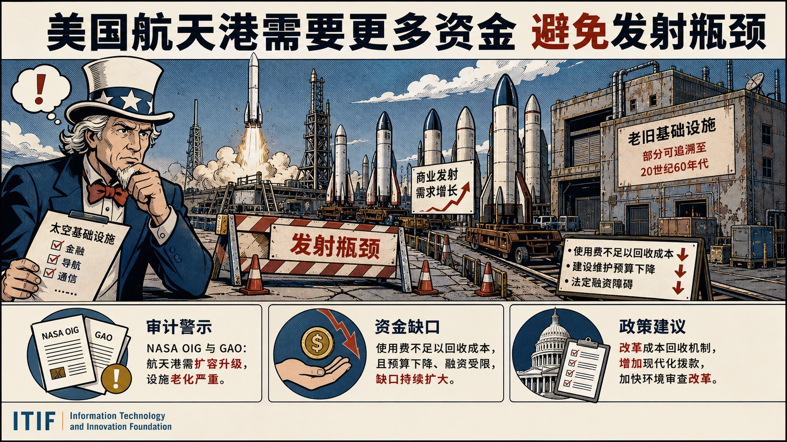
ITIF持明确警示立场，认为发射台、载荷集成设施等能力不足和设备老化将使航天港成为美国太空产业增长的主要瓶颈。
美国航天港需要更多资金以避免发射瓶颈
论证与政策含义
- Information Technology and Innovation Foundation评估美国政府航天港能否承受政府和商业发射需求增长，背景是卫星已成为金融、导航和通信等领域的基础设施。
- 文章并列引用NASA监察长办公室和美国政府问责局报告：肯尼迪航天中心、沃洛普飞行设施以及太空军设施都需要扩容和现代化，部分基础设施可追溯至20世纪60年代。
- 两份审计共同指出，政府向商业发射企业收取的费用不足以回收成本并再投资，同时建设维护预算下降和法定融资障碍进一步放大缺口。
- Information Technology and Innovation Foundation承认提高使用费可能引发企业转移的担忧，但反驳称欧洲库鲁航天中心容量有限、在中国发射存在经济与安全风险，美国的发射频次、轨道条件和供应链仍具不可替代性。
政策建议
文章建议NASA参照太空军改革商业用户成本回收机制，并把使用费直接投入设施升级；国会应增加NASA和太空军航天港现代化拨款，同时改革被用于拖延关键基础设施项目的环境审查程序。本周事实：2024年美国数字经济产出达到GDP的18%
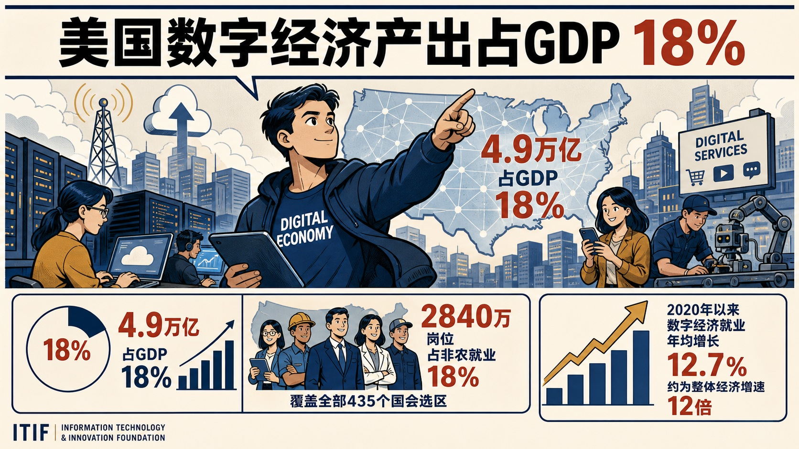
ITIF对数字经济的增长贡献持明确积极立场，将其视为美国最大的经济板块之一和过去数十年的重要增长动力。
本周事实：2024年美国数字经济产出达到GDP的18%
论证与政策含义
- Information Technology and Innovation Foundation数据简报衡量美国数字经济的产出与就业规模，覆盖数字服务和产品、数字基础设施运营以及支撑数字基础设施的软硬件制造。
- 依据美国互动广告局研究，2024年美国数字经济产值为4.9万亿美元，占国内生产总值18%。
- 同年该部门支持2840万个岗位，占非农就业18%，且就业分布覆盖全部435个国会选区。
- 2020年以来数字经济就业年均增长12.7%，约为整体经济增速的12倍；文章以这些数据强调数字化的广泛经济和就业效应，没有讨论统计口径争议或提出政策建议。